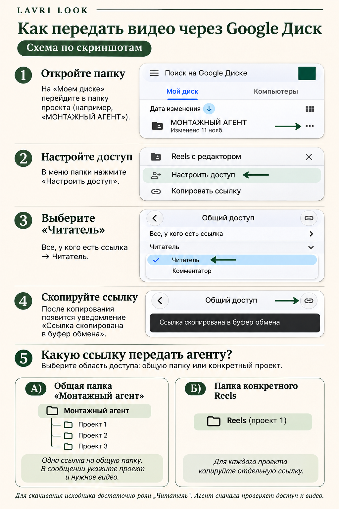

По картинкам: где нажимать
На схеме показан порядок действий в Google Диске: меню папки → «Настроить доступ» → «Читатель» → копирование ссылки. Вид меню может отличаться в зависимости от устройства.

1. Подготовь папку
Загрузи видео на Google Диск. Для проекта удобно создать отдельную папку с подпапками «Исходники», «Музыка», «Графика» и «Готовые видео». Открывай доступ только к материалам, которые готова передать агенту.
Какую папку передать агенту
Проверьте права вложенных папок и файлов: ограниченный доступ к отдельному видео может сохраниться. Если агент не видит материал, сначала проверьте ссылку и разрешения.
2. Выбери способ доступа
Если агент поддерживает авторизованное подключение Google Drive, подключи его и предоставь доступ к нужным файлам или папке в рамках доступных настроек интеграции.
Для передачи по публичной ссылке выбери «Все, у кого есть ссылка» → «Читатель». Проверь, что скачивание разрешено. Право редактирования исходного видео не требуется. Не открывай таким способом личные или конфиденциальные материалы.
3. Проверь ссылку
Скопируй ссылку на файл или папку. Если используешь публичную ссылку, открой её без входа в аккаунт и проверь скачивание. Для приватного подключения проверяй доступ через сам коннектор.
4. Передай задачу агенту
Отправь ссылку в рабочий чат и добавь команду ниже. Начни с проверки доступа и плана монтажа.
Что важно понимать
- Ссылка не отменяет ограничения размера, длительности и форматов. У среды агента должны быть место для файла, сетевой доступ и инструменты обработки видео.
- Обычный чат Claude или ChatGPT не обязательно умеет скачать файл, просмотреть видео и выполнить монтаж. Коннектор для поиска документов тоже не гарантирует обработку больших видео.
- Для работы с файлами и монтажом может понадобиться среда Claude Code, Codex или другой настроенный агент. Если инструмента нет, можно получить сценарий или монтажный лист.
- Доступ к исходникам на чтение и право сохранить результат в папку — разные разрешения. Дополнительные права выдавай только при необходимости.
Как выглядит сообщение агенту
Схематичный пример
Вставьте ссылку, укажите проект и добавьте полный промпт ниже. Для общей папки важно назвать нужный Reels; для папки одного проекта достаточно её ссылки.
Команда для агента
Ссылка на видео или папку: [вставь ссылку]. Проект или подпапка: [название или путь, если передаю общую папку]. Нужное видео: [название файла, если известно]. Если по ссылке доступна общая папка «Монтажный агент», найди в ней указанный проект. Если проект не указан или подходящих видео несколько, покажи варианты и уточни выбор. Не выбирай исходник наугад. Сначала проверь, доступен ли тебе файл и можешь ли ты скачать и обработать его в текущей среде. Если нет, прямо сообщи, чего не хватает. Не делай вид, что просмотрел недоступное видео. Посмотри исходник и предложи план монтажа: какие фрагменты оставить, какие паузы убрать, где нужны субтитры и музыка. Уточни неизвестные параметры: площадку, длительность, формат и стиль. Не меняй исходные файлы. Перед финальной сборкой покажи план и дождись моего подтверждения. После согласования подготовь ролик, если необходимые инструменты доступны. Если нет, дай монтажный лист с тайм-кодами. Результат сохрани отдельно от исходников. Музыку используй только с подходящими правами.